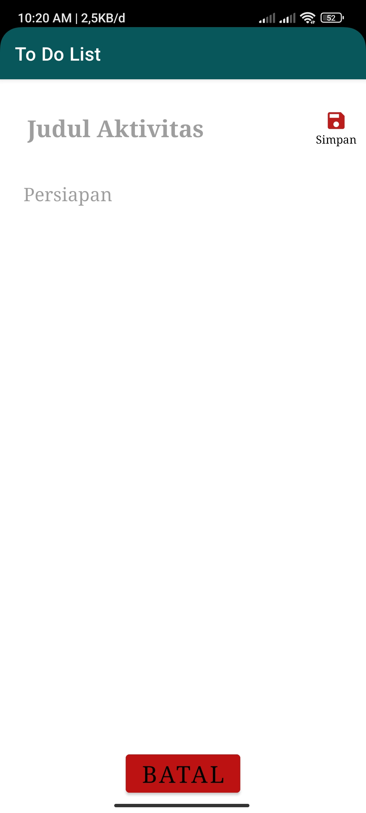
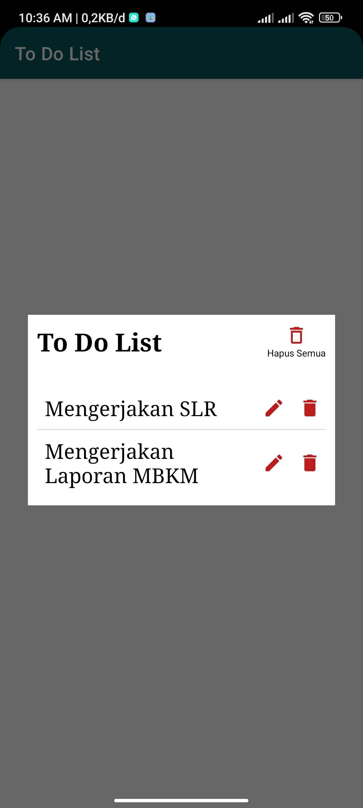

Documentation of ToDoList App


This application is made specifically to make a list of activities that need, want, and will be carried out in the near future or in the long term. Users can enter tasks they need to do. When they are done with their task, they can also remove it from the list. The To Do List application allows users to plan activities that are more organized, on time, achieve goals more quickly, and are responsible for the work that must be done and completed.
There are several conditions that must be available in this application, including :
- Users can add activities that must be done accompanied by a description
- Users can add as many activity lists as they want
- After the activity is finished, the user can remove the activity from the list
The following are the user interface components or User Interface (UI) that will be displayed in the application :
- There will be an add activity button.
- There will be a delete activity button for each activity added.
- Activities that have been added will be saved and can be seen in the list view (List).